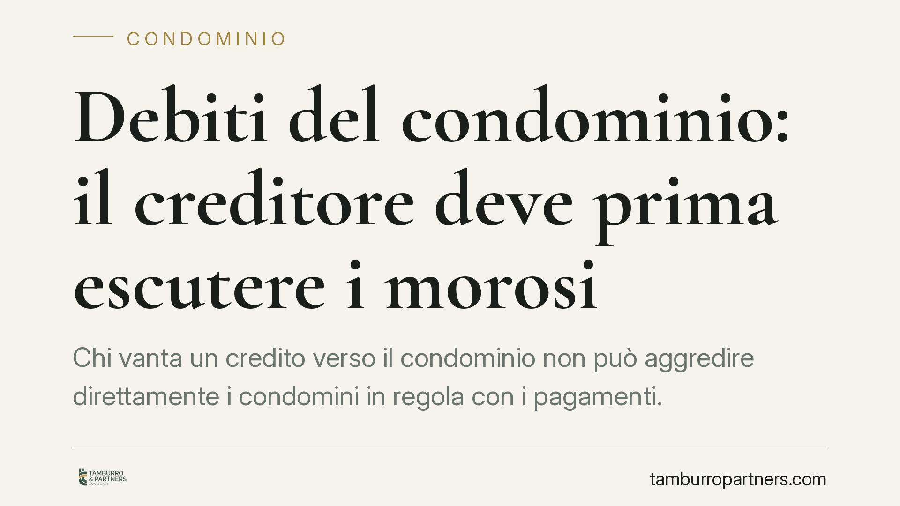

Debiti del condominio: il creditore deve prima escutere i morosi
Chi vanta un credito verso il condominio non può aggredire direttamente i condomini in regola con i pagamenti. La Cassazione ha ribadito che il creditore deve prima escutere i morosi: solo in caso di insufficienza può rivolgersi agli altri, e soltanto nei limiti delle quote non versate. Una regola che tutela il condomino diligente e ridefinisce le strategie di recupero.

Il caso
La questione è ricorrente: un fornitore, un appaltatore o una banca vanta un credito verso il condominio. L'ente di gestione non paga. A chi può rivolgersi il creditore per ottenere la somma dovuta?
La tentazione, per il creditore, è aggredire i condomini economicamente più solidi, a prescindere dal fatto che siano o meno in regola con i versamenti. La Corte di Cassazione (Sez. II, sent. n. 5043/2023 e pronunce successive) ha chiuso questa strada, confermando un orientamento ormai consolidato.
Inquadramento normativo
Il riferimento è l'art. 63 delle disposizioni di attuazione del codice civile, come riformato dalla Legge 220/2012. Il secondo comma stabilisce che i creditori non possono agire nei confronti dei condomini in regola con i pagamenti se non dopo l'escussione degli altri condomini.
La norma introduce quindi due principi.
Il primo è la parziarietà dell'obbligazione condominiale: ogni condomino risponde del debito comune solo in proporzione alla propria quota millesimale, non dell'intero. Il condominio non è un debitore unico e solidale.
Il secondo è il beneficium excussionis a favore del condomino in regola. In termini pratici: il creditore deve prima tentare di soddisfarsi sul patrimonio dei condomini morosi. Solo se questa escussione risulta insufficiente può rivolgersi ai condomini diligenti, e comunque nei limiti delle quote imputabili ai morosi.
La Cassazione ha precisato che non si tratta di una semplice preferenza procedurale: è un vero e proprio onere a carico del creditore, che deve dimostrare di aver prima agito contro chi non ha pagato.
Implicazioni pratiche
Per il condomino in regola, la pronuncia rappresenta una tutela concreta. Chi versa puntualmente la propria quota non può essere chiamato a coprire l'inadempimento altrui, salvo l'ipotesi residuale e sussidiaria già descritta. La morosità del vicino non si traduce automaticamente in un esborso per il condomino diligente.
Per il creditore, cambia la strategia di recupero. Non è più sufficiente ottenere un titolo esecutivo contro il condominio e scegliere liberamente il bersaglio patrimoniale. Occorre individuare i morosi e aggredirli per primi. Questo impone un passaggio informativo decisivo: il creditore ha diritto di ottenere dall'amministratore i dati sui condomini morosi e sulle rispettive quote.
Per l'amministratore, aumenta la responsabilità gestionale. È tenuto a comunicare al creditore l'elenco dei morosi e gli importi dovuti. Una comunicazione incompleta o reticente può esporlo a profili di responsabilità, perché ostacola il corretto ordine di escussione.
Resta ferma una conseguenza spesso trascurata: la parziarietà non elimina il rischio per i diligenti. Se un moroso è insolvente o irreperibile, la relativa quota può comunque ricadere, in via sussidiaria, sugli altri condomini. La regola protegge, ma non azzera il peso dell'inadempimento altrui.
Cosa fare in concreto
- Condomino in regola: conserva le ricevute di pagamento di tutte le quote. In caso di azione del creditore, la prova del versamento è lo strumento per opporre il beneficio di escussione.
- Amministratore: tieni aggiornato e documentato l'elenco dei condomini morosi con i relativi importi. In caso di richiesta del creditore, fornisci i dati in modo tempestivo e completo.
- Creditore: prima di agire, richiedi formalmente all'amministratore l'elenco dei morosi. Avvia l'escussione nei loro confronti e documenta l'esito, perché sarà presupposto per ogni azione successiva.
- In fase contrattuale: valuta l'inserimento di garanzie o clausole specifiche quando si stipulano contratti rilevanti con il condominio, per ridurre l'esposizione al rischio di morosità diffusa.
- In caso di decreto ingiuntivo ricevuto: verifica la tua posizione di pagamento prima di qualsiasi decisione; consigliamo di non ignorare l'atto e di valutare tempestivamente l'opposizione se risulti in regola.
Conclusioni
L'orientamento della Cassazione rafforza la logica della responsabilità individuale all'interno del condominio. Chi paga non deve farsi carico, se non in via del tutto residuale, di chi non paga. Ma la tutela richiede ordine, documentazione e tempestività: tanto dal lato del condomino quanto da quello dell'amministratore.
---
*Contributo informativo a cura di Tamburro & Partners - Avv. Giuseppe Tamburro. Non costituisce parere legale.*
Ogni condominio ha una storia a sé.
Se gestisci un'amministrazione e vuoi un confronto su una specifica questione condominiale, scrivi allo studio. Ti rispondiamo entro un giorno lavorativo.